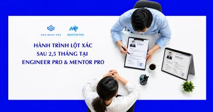
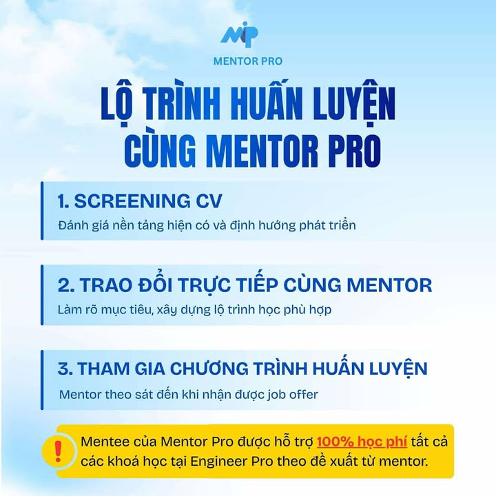
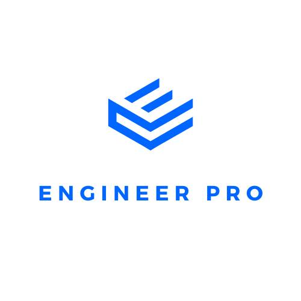

Thông tin Mentor
Mentor tại MentorPro đều là engineer Big Tech — đã trực tiếp phỏng vấn, hiring và build hệ thống ở quy mô lớn.
Mentor X
ex-Meta UK
LinkedIn ẩn theo yêu cầuCâu chuyện thành công
Dưới đây là 7 câu chuyện thật từ các học viên MentorPro — mỗi người một background, một cú rẽ, nhưng cùng chung một kết quả: nhận offer từ công ty mình mong muốn nhờ lộ trình đúng và sự đồng hành sát sao.
Highlights (từ 7/2025 — tháng thành lập)
- 25 học viên đã nhận offer, trong đó 8 offer từ 5 mentor Big Tech được công khai chia sẻ ở 7 câu chuyện bên dưới.
- Công ty học viên đã nhận offer: ANT Group · ANZ · SAP · Deputy · VinBigData · NAB · MB Bank · IBM · Dytech Lab · Grab.
- Học viên đa dạng: fresh grad → 5+ năm kinh nghiệm, từ outsource đến trái ngành.
- Trung bình 2 – 6 tháng từ khi vào lộ trình tới khi nhận offer.
7 câu chuyện — click vào để đọc chi tiết
#1
Trang — Fresh grad → ANT Group
Mentor anh Lâm · 2 tháng · Java Developer offer · Sinh năm 2003
▾
MỘT LỘ TRÌNH ĐÚNG CÓ THỂ ĐƯA BẠN ĐẾN ANT GROUP SỚM HƠN BẠN NGHĨ
Trong bối cảnh thị trường công nghệ ngày càng cạnh tranh, việc một sinh viên mới ra trường có cơ hội bước vào vòng phỏng vấn của những tập đoàn công nghệ lớn mang tầm quốc tế như ANT Group là điều không hề dễ dàng. Đằng sau mỗi cơ hội như vậy luôn là một quá trình chuẩn bị dài hơi, bài bản và có định hướng rõ ràng.
Trong buổi phỏng vấn hôm nay, Engineer Pro có dịp trò chuyện cùng một học viên của Mentor Pro, vừa hoàn thành các vòng phỏng vấn tại ANT Group. Bạn đã chia sẻ rất chi tiết về hành trình học tập tại Mentor Pro, quá trình chuẩn bị phỏng vấn cũng như những kinh nghiệm thực tế trong các vòng interview tại một tập đoàn công nghệ lớn.
Trước tiên, bạn có thể giới thiệu một chút về bản thân, background cũng như công việc hiện tại của mình được không?
Em sinh năm 2003. Em vừa mới tốt nghiệp đại học cách đây không lâu. Hiện tại, em đang là thực tập sinh phần mềm tại một công ty công nghệ khá có tiếng ở Việt Nam.
Tuy nhiên, bên cạnh việc làm việc trong môi trường trong nước, em cũng mong muốn tìm kiếm cơ hội được làm việc trong môi trường quốc tế, tiếp cận với những dự án lớn và chuyên nghiệp hơn. Chính vì vậy, em đã tìm đến Mentor Pro với mong muốn nhận được sự hỗ trợ, định hướng từ các anh chị mentor để có thể ứng tuyển vào những công ty công nghệ lớn trên thế giới.
Không biết là bạn đã thực tập được bao lâu rồi nhỉ?
Đến thời điểm hiện tại thì em đã thực tập được khoảng 6 tháng và cũng sắp kết thúc quá trình thực tập rồi ạ.
Vậy là bạn đã nhận được offer chính thức từ công ty thực tập rồi đúng không?
Dạ đúng rồi ạ. Hiện tại công ty đã gửi offer chính thức cho em với một mức lương nhất định, và bây giờ em đang trong quá trình trao đổi thêm để thương lượng về mức lương cũng như các quyền lợi khác.
Lý do nào đã khiến bạn quyết định lựa chọn Mentor Pro để đồng hành trong quá trình phát triển sự nghiệp?
Trước đó thì em đã biết đến Engineer Pro và cũng đã tham gia một số khóa học tại đây. Sau này, khi biết đến Mentor Pro nơi có các anh chị mentor đều xuất thân từ Engineer Pro thì em cảm thấy rất tin tưởng.
Ở giai đoạn ngay sau khi tốt nghiệp đại học, việc tìm kiếm một công việc tốt thực sự không dễ. Em nghĩ rằng nếu mình có sự hỗ trợ, định hướng từ các anh chị đã có nhiều kinh nghiệm làm việc tại các công ty lớn thì cơ hội để vào những môi trường tốt ngay từ đầu sẽ cao hơn. Và khi đã có nền tảng tốt trong vài năm đầu sự nghiệp thì những bước sau này cũng sẽ thuận lợi hơn rất nhiều.
Trước khi vào Mentor Pro, bạn đã tham gia những khóa học nào của Engineer Pro rồi?
Trước đó em đã tham gia các khóa như DSA 2, System Design 1, System Design và Backend.
Sau khi vào Mentor Pro thì các anh chị mentor cũng có assign thêm cho em một số khóa học khác để bổ sung kiến thức, giúp em chuẩn bị tốt hơn trước khi đi phỏng vấn vào các công ty lớn.
Cụ thể thì Mentor Pro có gợi ý cho bạn học thêm những khóa nào?
Anh Lâm có gợi ý cho em học thêm Low Level Design, Behavior Interview và System Design 2 để nâng cao hơn nữa kiến thức và khả năng phỏng vấn của mình.
Khi bắt đầu vào Mentor Pro thì lộ trình học tập và ôn luyện của bạn được định hướng như thế nào?
Ban đầu các anh chị mentor sẽ gửi trước cho em danh sách các khóa học để em chủ động học và chuẩn bị. Sau đó, các anh chị sẽ assign thêm những bài tập để em làm và gửi lại để được review.
Song song với việc học các khóa học đó, em cũng làm bài tập trong từng khóa. Ngoài ra, mỗi ngày em đều duy trì việc làm thêm khoảng hai bài trên LeetCode để rèn luyện tư duy thuật toán.
Trong quá trình này, các anh chị mentor cũng refer em vào một số công ty để em đi phỏng vấn thử, qua đó tích lũy thêm kinh nghiệm thực tế.
Tại Mentor Pro thì ngoài việc làm bài tập ra, bạn có được mock interview không?
Trước khi em đi phỏng vấn thật thì thường sẽ có các buổi mock interview.
Tùy từng công ty mà cách mock interview sẽ khác nhau. Ví dụ như với những công ty mà anh Lâm có người quen đang làm việc bên trong, anh sẽ nhờ họ mock interview giúp em. Còn trong nhiều trường hợp thì chính anh Lâm sẽ trực tiếp mock interview và review lại cho em để em chuẩn bị tốt nhất trước buổi phỏng vấn chính thức.
Người trực tiếp mentor cho bạn trong Mentor Pro là ai?
Dạ là anh Lâm ạ.
Bạn tham gia Mentor Pro từ thời điểm nào?
Em bắt đầu tham gia từ khoảng tháng 8. Tính đến bây giờ thì cũng đã được hơn 2 tháng rồi ạ.
Trong suốt quá trình đó, lộ trình ôn luyện để phỏng vấn vào ANT Group có được xây dựng rõ ràng không?
Role mà em ứng tuyển tại ANT Group là Java Developer.
Ngoài những nội dung ôn luyện chung cùng anh Lâm, em còn tập trung ôn kỹ các kiến thức về Java Core, vì trước đó em cũng đã làm thực tập sinh Backend Java. Bên cạnh đó, em cũng chuẩn bị rất kỹ về System Design, vì ở vòng một các anh có chia sẻ rằng vòng hai có thể sẽ hỏi về phần này.
Sau khi trao đổi với anh Lâm, anh cũng đã tổ chức riêng cho em một buổi mock interview về System Design để em có sự chuẩn bị tốt nhất.
Từ tháng 8 đến nay, bạn đánh giá như thế nào về Mentor Pro?
Em cảm thấy anh Lâm support rất nhiều. Anh chủ động gửi hồ sơ của em cho những người quen đang làm việc tại các công ty lớn.
Tùy từng công ty mà anh sẽ định hướng cho em những nội dung cần ôn tập khác nhau. Ngoài ra, các buổi mock interview cũng giúp em nhận ra điểm yếu của mình để cải thiện. Em thực sự cảm thấy sự hỗ trợ rất kỹ và sát sao.
Bạn có thể chia sẻ chi tiết về quy trình phỏng vấn tại ANT Group không?
Tại ANT Group thì em trải qua tổng cộng ba vòng phỏng vấn.
- Vòng một: Em phỏng vấn với hai anh engineer người Việt trong team. Hai anh hỏi rất kỹ về dự án mà em đã làm trong quá trình thực tập, đặc biệt là vì dự án đó có liên quan đến thanh toán trực tuyến khá phù hợp với lĩnh vực mà công ty đang làm. Ngoài ra, các anh cũng hỏi rất sâu về Core Java.
- Vòng hai: Em phỏng vấn với một anh manager bên Singapore. Ban đầu em nghĩ vòng này sẽ hỏi System Design, nhưng thực tế anh không hỏi phần đó mà tập trung nhiều vào project, behavior interview và có thêm một câu hỏi logic liên quan đến toán.
- Vòng ba: Em phỏng vấn với Hiring Manager. Chị hỏi về định hướng nghề nghiệp của em trong vài năm tới, mong muốn của em đối với công ty cũng như môi trường làm việc.
Trong ba vòng đó, vòng nào khiến bạn cảm thấy áp lực và khó khăn nhất?
Ban đầu em nghĩ vòng hai sẽ là khó nhất vì phỏng vấn với manager ở Singapore. Em đã chuẩn bị rất kỹ về technical và system design. Tuy nhiên, khi vào phỏng vấn thì anh ấy khá thoải mái và hỏi nhiều về behavior hơn.
Vòng em cảm thấy khó nhất thực sự là vòng một, vì hai anh engineer hỏi rất sâu về technical và chi tiết về dự án.
Anh Lâm có hỗ trợ bạn chỉnh sửa CV không?
Anh Lâm giúp em chỉnh sửa CV và nhắc em bổ sung thêm các số liệu cụ thể vào CV để làm nổi bật hơn những gì em đã làm.
Theo bạn, những kiến thức tại Engineer Pro và sự dẫn dắt từ Mentor Pro có đủ giúp bạn vượt qua các vòng phỏng vấn này không?
Dạ em nghĩ là hoàn toàn đủ. Các khóa học của Engineer Pro giúp em ôn tập đúng trọng tâm. Kiến thức vốn rất rộng nhưng các anh đã hệ thống lại, giúp em có cái nhìn rõ ràng hơn về việc phỏng vấn sẽ hỏi gì và mình nên tập trung vào đâu. Em thấy điều này rất hữu ích.
Bạn có lời khuyên nào dành cho các bạn đang chuẩn bị ứng tuyển vào các công ty lớn không?
Em nghĩ các bạn nên tập trung thật chắc vào kiến thức nền tảng. Với các bạn mới ra trường thì nhà tuyển dụng thường sẽ hỏi rất sâu về CS fundamentals, hệ điều hành, cấu trúc dữ liệu và thuật toán hơn là kinh nghiệm thực tế.
Đặc biệt, DSA là phần rất quan trọng, các bạn cần nắm thật vững các thuật toán và cấu trúc dữ liệu cơ bản.
Ngoài ANT Group thì bạn còn phỏng vấn ở công ty nào khác không?
Dạ trước đó em cũng đã phỏng vấn tại một số công ty như Microsoft, Anduin và làm bài test của NAB và WorldQuant. Tuy nhiên, em chưa pass được những công ty đó. Hiện tại với ANT Group thì em đang trong giai đoạn trao đổi thêm về lương và benefit.
Qua những chia sẻ rất chi tiết của bạn học viên trên, có thể thấy rằng hành trình chinh phục các tập đoàn công nghệ lớn không chỉ cần năng lực cá nhân mà còn đòi hỏi một lộ trình học tập bài bản, sự kiên trì và đặc biệt là sự đồng hành đúng người, đúng thời điểm.
Mentor Pro không chỉ giúp bạn hệ thống lại kiến thức, rèn luyện kỹ năng phỏng vấn mà còn mở ra những cơ hội thực tế để cọ xát với các công ty lớn ngay từ khi còn rất sớm trong sự nghiệp. Đây chính là nền tảng quan trọng để các bạn trẻ tự tin bước ra thị trường công nghệ toàn cầu.
#2
Khánh Chương — 3-4y Backend → ANZ
Mentor anh Lâm + anh Hòa · Khi behavior là rào cản lớn nhất
▾
KHI BEHAVIOR CÓ PHẢI LÀ RÀO CẢN LỚN NHẤT ĐỂ NHẬN OFFER?
Trong hành trình chinh phục các vị trí kỹ sư phần mềm tại những công ty lớn, kỹ thuật giỏi là điều kiện cần nhưng chưa bao giờ là điều kiện đủ. Đằng sau mỗi buổi phỏng vấn là cả một quá trình chuẩn bị dài hơi, từ kiến thức nền tảng, kỹ năng giải quyết vấn đề, cho đến khả năng giao tiếp và thể hiện bản thân.
Hôm nay, Mentor Pro có dịp trò chuyện cùng một học viên đã trải qua nhiều vòng phỏng vấn tại các công ty lớn trong và ngoài nước. Qua cuộc phỏng vấn này, bạn sẽ chia sẻ chi tiết về quá trình học tập tại Mentor Pro, hành trình ôn luyện trước khi đi phỏng vấn, cũng như những bài học thực tế rút ra sau nhiều lần fail và cải thiện.
Trước tiên, bạn có thể giới thiệu một chút về bản thân, kinh nghiệm làm việc cũng như hành trình học tập của mình tại Mentor Pro không?
Em có khoảng 3-4 năm kinh nghiệm làm backend engineer. Trước khi đến với Mentor Pro, thật ra em cũng đã có sự chuẩn bị nhất định rồi, đặc biệt là về thuật toán (DSA) và system design. Nói chung lúc đó em nghĩ là phần technical của mình cũng tương đối ổn.
Tuy nhiên, khi tham gia Mentor Pro, các anh mentor đã review và điều chỉnh lại rất nhiều thứ cho em, từ CV, code, cho đến cách em thể hiện bản thân khi đi phỏng vấn. Ví dụ như trong code, các anh chỉ ra những chỗ bị code smell mà trước đó em không để ý, rồi hướng dẫn cách refactor cho tốt hơn.
Về CV, trước đây CV của em khá là không có điểm nhấn, không có số liệu cụ thể để thể hiện impact công việc. Các anh đã giúp em chỉnh lại nội dung, bổ sung project, thêm các con số cụ thể để CV trở nên ấn tượng và có sức thuyết phục hơn.
Ngoài ra, Mentor Pro còn có những buổi meeting mà các anh bổ sung thêm kiến thức Computer Science, những phần mà khi tự học rất khó nhận ra là mình đang thiếu hoặc hiểu chưa sâu. Dù trước đó em đã chuẩn bị rồi, nhưng khi vào Mentor Pro thì vẫn được bổ sung thêm rất nhiều kiến thức mới và sâu hơn.
Vậy còn giai đoạn đi phỏng vấn thì sao? Bạn bắt đầu đi phỏng vấn từ khi nào và trải nghiệm ban đầu thế nào?
Khoảng 2-3 tháng trước khi đi phỏng vấn, em bắt đầu apply và phỏng vấn khá nhiều công ty. Những công ty đầu tiên thì em fail khá sớm, chủ yếu là ở các vòng culture fit và behavioral.
Lúc đó do chưa chuẩn bị kỹ, chưa quen format câu hỏi kiểu “Tell me about…” hay các câu hỏi tình huống, nên em bị fail ngay từ những vòng đầu. Sau này, khi chuẩn bị kỹ hơn, em bắt đầu bắt được nhịp của behavioral interview, nên phần này cải thiện hơn.
Về technical thì em khá ổn, vì phần này đã được các anh mentor chuẩn bị và ôn luyện từ trước rồi, từ DSA, System Design cho tới các câu hỏi Computer Science. Nhưng sau đó lại lộ ra một vấn đề khác, đó là culture fit ở vòng cuối.
Có những buổi phỏng vấn em vượt qua gần hết các vòng, đến vòng gặp manager hoặc CEO thì lại bị đánh giá là communication chưa bằng các ứng viên khác, nên không được offer.
Sau khi nhận feedback như vậy, bạn đã làm gì để cải thiện?
Em nhận ra là communication và cách thể hiện bản thân cực kỳ quan trọng. Em có trao đổi với các anh mentor, nhận advice từ các anh và bắt đầu luyện tập giao tiếp nhiều hơn mỗi ngày.
Ví dụ như em tập nói, tập diễn đạt suy nghĩ rõ ràng hơn, thậm chí chat và luyện phản xạ giao tiếp để cải thiện dần. Sau một thời gian, em thấy khả năng communicate của mình tốt lên rõ rệt so với những buổi phỏng vấn đầu tiên.
Hiện tại bạn đã nhận offer chính thức ở công ty nào chưa?
Hiện tại em mới nhận được thông báo là pass ANZ, nhưng do bên công ty vẫn chưa có headcount chính thức, nên có thể phải đợi sang năm.
Trong suốt quá trình đó, bạn đã phỏng vấn khoảng bao nhiêu công ty?
Khoảng 7-8 công ty, và hầu hết đều là do Mentor Pro refer.
Trong quá trình học, Mentor Pro có hỗ trợ bạn tham gia các khóa học nào tại Engineer Pro không?
Em có chọn các khóa pet project như Redis, các khóa về ngôn ngữ như Go, Java vì thị trường Việt Nam khá chuộng những stack này.
Còn các khóa DSA và System Design thì thật ra trước khi vào Mentor Pro em cũng đã học rồi, nhưng khi học lại tại đây thì được bổ sung thêm kiến thức CS và cách tiếp cận bài bản hơn.
Bạn đánh giá thế nào về chất lượng giảng dạy và lộ trình học tại Mentor Pro?
Em thấy các khóa như System Design và DSA có outline rất rõ ràng, giúp em ôn tập lại cực kỳ dễ. Nhiều lúc chỉ cần mở slide là nhớ lại được toàn bộ kiến thức, không nhất thiết phải xem lại recording.
Giảng viên cũng dạy khá sâu, không chỉ dừng ở syntax mà đi vào bản chất. Ví dụ như khóa Go thì giảng viên tập trung vào cách hoạt động bên trong, những thứ mà mình khó tự học nếu không có người chỉ.
Trong Mentor Pro thì ai là người trực tiếp dẫn dắt bạn?
Chủ yếu là anh Lâm, ngoài ra có một số buổi với anh Hòa.
- Anh Hòa thường tập trung vào CS, DSA, đặt câu hỏi để mình tự trả lời rồi feedback lại.
- Anh Lâm thì em gặp nhiều nhất: anh review code DSA, chỉ ra code smell, ôn lại kiến thức CS, technical xung quanh, đồng thời cũng refer em vào các công ty. Sau khi em fail nhiều ở phần behavioral, các anh cũng feedback rất thẳng thắn để em cải thiện.
Bạn có thể chia sẻ về quy trình phỏng vấn tại một công ty cụ thể, ví dụ như ANZ không?
Đối với ANZ, quy trình của em gồm 2 vòng.
- Vòng 1:
- Có 2 section, tổng cộng khoảng 150 phút
- Section đầu là behavior + technical questions về kinh nghiệm, CS
- Section sau là DSA, dạng HackerRank/LeetCode, làm trong 45 phút
- Vòng 2:
- Phần đầu vẫn là behavior + technical discussion
- Sau đó là System Design Vòng khó nhất với em là vòng 1, vì thời gian dài, liên tục nhiều section và nếu không quen pattern DSA thì rất dễ bị khớp.
Theo bạn, kiến thức học tại Engineer Pro và sự hướng dẫn từ Mentor Pro có giúp bạn vượt qua các vòng này không?
DSA thì gần như đúng các dạng bài đã được ôn. System Design thì em làm theo 7 bước các anh hướng dẫn, nên trình bày khá mạch lạc và interviewer cũng đánh giá tốt.
Sau nhiều lần fail, tâm lý của bạn lúc đó thế nào?
Thật ra lúc đầu em stress khá nhiều.
Vì em được refer khá nhiều, nhưng fail lại không phải ở technical mà ở culture fit và communication, nên em thấy hơi tiếc.
Nhưng nhờ các anh mentor động viên, khuyên là cứ tiếp tục cải thiện, nên em tập trung học hơn. Càng về sau, em thấy mình tự tin và tiến bộ rõ rệt so với những buổi phỏng vấn đầu.
Bạn rút ra được bài học gì sau hành trình này?
Em thấy là ngoài technical thì behavior, communication và research về công ty cực kỳ quan trọng. Khi đi phỏng vấn, cần chuẩn bị kỹ các story, hiểu rõ công ty mình apply và chuẩn bị nhiều câu hỏi chất lượng cho nhà tuyển dụng.
Có những lần em chỉ chuẩn bị 2-3 câu hỏi, bị đánh giá là chưa tìm hiểu đủ sâu về công ty.
Cuối cùng, bạn có lời khuyên nào cho các bạn đang chuẩn bị ôn luyện và đi phỏng vấn không?
Em nghĩ là mọi người nên ôn kỹ DSA, System Design, nhưng đừng xem nhẹ culture fit và communication. Có nhiều trường hợp technical bạn tốt hơn ứng viên khác, nhưng người ta vẫn chọn ứng viên giao tiếp tốt hơn, vì technical có thể đào tạo thêm, còn communication thì rất khó thay đổi trong thời gian ngắn.
Hành trình của bạn học viên là một ví dụ rất thực tế cho thấy rằng: đi phỏng vấn không chỉ là kiểm tra kiến thức kỹ thuật, mà còn là bài kiểm tra về cách tư duy, giao tiếp và thể hiện bản thân. Mentor Pro không chỉ giúp học viên củng cố nền tảng technical, mà còn đồng hành trong việc điều chỉnh mindset, kỹ năng và chiến lược phỏng vấn.
Hy vọng câu chuyện này sẽ giúp các bạn đang trên hành trình ôn luyện có thêm góc nhìn thực tế và chuẩn bị tốt hơn cho những buổi phỏng vấn sắp tới.
#3
Tiên — 4.5y Java/Banking → SAP + Naver
Mentor anh Lâm + anh Long · 2 offer cùng lúc, trước khi training chính thức bắt đầu
▾
ĐẦU TƯ ĐÚNG CHỖ - NHẬN OFFER SAP TRƯỚC CẢ KHI TRAINING CHUYÊN SÂU BẮT ĐẦU
Trong hành trình phát triển sự nghiệp của một kỹ sư phần mềm, có những thời điểm mang tính bước ngoặt khi bạn nhận ra mình chưa đủ mạnh để bước vào sân chơi lớn, nhưng cũng đủ quyết tâm để đầu tư nghiêm túc cho cú nhảy tiếp theo.
Câu chuyện hôm nay là hành trình của một học viên Mentor Pro - người đã từng thất bại ở các vòng phỏng vấn vì yếu technical và behavioral, nhưng chỉ sau một thời gian rèn luyện bài bản, đã xuất sắc vượt qua quy trình tuyển dụng đầy thử thách của SAP và Naver.
Hãy cùng lắng nghe chia sẻ chi tiết về quá trình học tập tại Mentor Pro cũng như hành trình phỏng vấn đầy thử thách này.
Trước tiên, bạn có thể giới thiệu một chút về bản thân, background và kinh nghiệm làm việc của mình được không?
Em là Software Engineer với khoảng 4.5 năm kinh nghiệm. Ngôn ngữ chính của em là Java. Domain em làm chủ yếu là banking.
Hiện tại em đang làm ở công ty outsource. Tuy nhiên định hướng sắp tới của em là chuyển sang product, và nếu có thể thì vào một công ty lớn kiểu big tech hoặc môi trường chuyên nghiệp, có hệ thống bài bản hơn.
Thật ra trước khi học Mentor Pro, vào khoảng tháng 7 tháng 8, em cũng đã đi phỏng vấn vài nơi rồi. Nhưng lúc đó em cảm nhận rất rõ là mình còn yếu. Em không muốn nhảy việc kiểu “tạm được”, mà nếu đã nhảy thì phải thật sự xứng đáng. Đó cũng là lý do em quyết định đầu tư nghiêm túc cho việc học.
Vì sao bạn lại chọn Mentor Pro?
Ban đầu em chỉ biết đến Engineer Pro thôi. Nhưng em hiểu bản thân mình nếu chỉ học khóa lẻ thì em rất dễ lười.
Còn Mentor Pro thì có sự cam kết cao hơn. Dù chi phí cao hơn, nhưng em thấy chính vì có cam kết nên mình sẽ buộc phải nghiêm túc. Và em quyết định đăng ký.
Theo hợp đồng thì đến ngày 15/12 em mới chính thức bắt đầu training chuyên sâu. Nhưng ngay từ trước đó, anh Lâm đã yêu cầu em:
- Sửa CV
- Luyện LeetCode mỗi ngày
-
Học các khóa nền tảng bên Engineer Pro Em học các khóa:
-
DSA 1
- DSA 2
- System Design 1
- CS
- Một khóa Redis với anh Quang Hoàng @ Google Thú thật là em không thể nắm 100% toàn bộ kiến thức ngay lập tức. Nhưng nó “thấm” dần. Em luyện mỗi ngày 2–3 bài LeetCode, từ dễ đến khó. Sau một thời gian, khi gặp một bài toán mới, em có thể nghĩ ra hướng solution rất nhanh. Cái đó là do luyện tư duy đều đặn mỗi ngày.
Bạn có gặp khó khăn gì trong quá trình học không?
Điểm yếu lớn nhất của em là behavioral.
Trước đó em từng bị trượt vài nơi chỉ vì behavioral và cultural fit. Lúc vào Mentor Pro, em được add vào group behavioral khá trễ, nhưng anh Long nói là đã có cấu trúc sẵn rồi, cứ soạn theo framework STAR.
Em làm rất kỹ:
- Soạn từng câu hỏi theo cấu trúc STAR
- Không học thuộc, mà gắn với chính trải nghiệm của mình
- Sau đó em còn dùng ChatGPT để kiểm tra lại câu trả lời, chỉnh sửa cho đầy đủ ý Ví dụ:
Em đưa ra tình huống, ý chính mình muốn nói là gì, nhờ ChatGPT giúp em diễn đạt sao cho đủ, logic và rõ ràng. Nhờ vậy em có bộ câu trả lời rất đầy đủ, tự tin hơn rất nhiều.
Bạn chia sẻ kỹ hơn về quá trình phỏng vấn bên SAP được không?
Quy trình bên SAP rất dài và theo em đánh giá là khó.
Ban đầu em apply đại thôi, không kỳ vọng nhiều. Sau khi pass một vòng, họ gửi link chọn lịch phỏng vấn vòng tiếp theo. Không có HR liên hệ trực tiếp, mọi thứ đi theo process khá chặt chẽ.
Tổng cộng có 3 vòng:
Vòng 1 (Online)
- Hỏi sâu về dự án cũ
- Một ít lý thuyết
-
Một câu thuật toán Vòng 2 (Online)
-
Hỏi nhiều về Java, Spring Boot, kiến thức hệ thống
- Phần lớn là lý thuyết
- Có thêm một câu thuật toán
- Phỏng vấn hoàn toàn bằng tiếng Anh Vòng 3 (Onsite tại văn phòng)
Đây là vòng khó nhất.
- Thời lượng: khoảng 2 tiếng
- 3 người phỏng vấn (1 ở Việt Nam, 2 manager nước ngoài)
- Không phỏng vấn cùng lúc, mà lần lượt từng người
- Mỗi người đều hỏi 1 câu LeetCode → tổng 3 câu
-
Hỏi cả technical lẫn tình huống và cultural Điều khiến em khó nhất là:
-
Ba người, ba style khác nhau
- Có thể hỏi nội dung tương tự nhưng cách đặt vấn đề khác
- Em không biết trước cấu trúc vòng này sẽ diễn ra như vậy Nó challenge cả technical lẫn khả năng ứng biến.
Tuy nhiên nhờ quá trình luyện DSA đều đặn, các bài LeetCode em gặp đều ở mức easy–medium, và em có thể nghĩ ra solution khá nhanh.
Cuối cùng em pass SAP.
Còn bên Naver thì sao?
Bên Naver thì quy trình ngắn gọn hơn.
Ban đầu họ gửi một bài test. Em apply hai team, làm bài xong thì được mời phỏng vấn.
Vòng Technical
- 2 interviewer (1 senior, 1 rất kỳ cựu)
- Không hỏi theo kiểu lý thuyết thuần
- Không hỏi system design truyền thống
- Đưa ra tình huống rất mở: → “Trong tình huống này bạn sẽ thiết kế hệ thống như thế nào?” Nó rất khác với những gì em từng làm. Lúc đầu em hơi đơ. Nhưng nhờ đã học System Design và các kiến thức nền tảng ở Engineer Pro, em vẫn có thể triển khai được hướng giải quyết.
Vòng Cultural
- Phỏng vấn với COO và một người Hàn Quốc
- Có phiên dịch
- Hỏi về cách làm việc, cách xử lý challenge
- Thành tựu lớn nhất
- Tính cách cá nhân Vòng này em cảm thấy khá thoải mái. Sau buổi đó em tự tin hơn hẳn.
Ban đầu Naver offer mức thấp hơn SAP khá nhiều. Em đã từ chối. Sau đó họ tăng offer lên. Hai bên cân nhắc qua lại vài lần.
Bạn đánh giá thế nào về lộ trình và mentor tại Mentor Pro?
Thực ra em còn chưa đến giai đoạn training chuyên sâu chính thức. Vì theo hợp đồng là 15/12 bắt đầu, nhưng cuối tháng 12 em đã phỏng vấn và nhận offer rồi.
Tuy nhiên giai đoạn nền tảng trước đó cực kỳ quan trọng:
- Luyện LeetCode mỗi ngày
- Học DSA, CS, System Design
- Sửa CV
- Chuẩn bị behavioral có cấu trúc Những khóa ở Engineer Pro em được học hoàn toàn miễn phí trong chương trình Mentor Pro.
Nếu sau này em muốn học tiếp System Design 2 hay nâng cao hơn, em nghĩ team vẫn hỗ trợ.
Hiện tại em muốn nghỉ ngơi một chút sau đợt phỏng vấn căng thẳng. Sau Tết có thời gian em sẽ tiếp tục luyện để giữ form.
Kết bài
Hành trình của bạn học viên này cho thấy một điều rất rõ ràng:
** Không phải cứ nhiều năm kinh nghiệm là đủ để vào big tech*
** Điểm yếu lớn nhất đôi khi không phải technical, mà là behavioral và tư duy hệ thống*
** Quan trọng nhất là sự nghiêm túc và kỷ luật mỗi ngày*
Từ một người từng trượt vì behavioral, cảm thấy bản thân còn yếu, đến việc vượt qua quy trình tuyển dụng dài và khó của SAP, cũng như nhận offer từ Naver đó không phải là may mắn, mà là kết quả của một quá trình luyện tập có chiến lược.
Mentor Pro không chỉ cung cấp kiến thức, mà còn tạo ra sự cam kết đủ mạnh để học viên buộc phải thay đổi.
Và đôi khi, bước ngoặt sự nghiệp không bắt đầu từ một offer lớn mà bắt đầu từ quyết định: “Nếu đã nhảy, thì phải nhảy cho đáng.”

#4
Chấn — 5+y Backend Outsource → Deputy (team Úc)
Mentor anh Lâm + anh Harry · 2.5 tháng · Tự apply không referral
▾
HÀNH TRÌNH LỘT XÁC SAU 2,5 THÁNG TẠI ENGINEER PRO & MENTOR PRO
Với hơn 5 năm kinh nghiệm làm việc trong lĩnh vực phần mềm, hành trình của một backend engineer, từng gói gọn trong những dự án outsource ở các công ty nhỏ. Thế nhưng, chỉ sau vài tháng học tập và đồng hành cùng Engineer Pro và Mentor Pro, anh đã chính thức nhận được offer từ Deputy. Trong buổi trò chuyện cùng Engineer Pro, anh đã chia sẻ về quá trình học tập, sự thay đổi trong tư duy và những kinh nghiệm quý giá giúp anh chinh phục thành công này.
Anh có thể chia sẻ đôi nét về bản thân và hành trình sự nghiệp của mình không?
Mình đã đi làm hơn 5 năm, bắt đầu từ giai đoạn 2018-2019. Trước đây chủ yếu làm ở các công ty nhỏ theo mô hình outsource. Năm ngoái, nhờ một người bạn từng học ở Engineer Pro giới thiệu, mình bắt đầu tìm hiểu và quyết định tham gia. Điều gây ấn tượng đầu tiên là đội ngũ mentor đều xuất thân từ các công ty Big Tech, điều này khiến mình tin rằng cơ hội bước chân vào môi trường lớn là hoàn toàn khả thi nếu có lộ trình học tập đúng đắn.
Vậy mục tiêu ban đầu khi tham gia Engineer Pro của anh là gì?
Thực ra lúc đó mình không quá đặt nặng chuyện phải có offer. Mục tiêu chính là củng cố kiến thức nền tảng, học bài bản hơn để có thể ứng dụng vào công việc.
Ban đầu mình học các khóa DSA1, DSA2, System Design 1 và Behavior, sau đó còn tham gia một số mini project. Nhận thấy kiến thức rất thực tế, sát với dự án nhờ mentor đều đang làm việc tại các công ty lớn, mình quyết định đăng ký Mentor Pro vì muốn được kèm cặp sát sao hơn.
Vì sao anh quyết định tiếp tục với Mentor Pro?
Khi học lớp đông, mình có rất nhiều câu hỏi nhưng lại ngại hỏi quá nhiều vì sợ ảnh hưởng đến người khác. Mentor Pro giải quyết vấn đề đó: mình được hướng dẫn chi tiết, có lộ trình học cụ thể. Trước đây mình hay học lan man, nhưng mentor luôn kiểm soát tiến độ và chỉ cho học tiếp khi đã nắm vững kiến thức.
Anh có thể chia sẻ thêm về quá trình học và mentor của mình tại Mentor Pro không?
Mentor trực tiếp của mình là anh Lâm và anh Harry. Mình cũng là một trong những học viên đầu tiên của chương trình. Trong suốt khóa học, mỗi tuần đều có một buổi call cố định để review tiến độ và giải đáp thắc mắc. Ngoài ra, nếu cần hỗ trợ thêm, mình có thể nhắn tin trực tiếp bất cứ lúc nào.
Anh mất bao lâu để nhận được offer từ Deputy?
Mình bắt đầu học tại Mentor Pro khoảng 23/6 và sau khoảng 2 tháng rưỡi thì có offer. Thực ra ban đầu mình không target công ty cụ thể mà chỉ muốn học chắc từ nền tảng. Mentor xây dựng lộ trình dựa vào năng lực của mình. Khi cuối năm đến, thời điểm nhiều công ty mở tuyển dụng, mình thử apply để học hỏi kinh nghiệm, không ngờ lại có kết quả tốt như vậy.
Anh có thể chia sẻ về quá trình phỏng vấn tại Deputy không?
Quá trình phỏng vấn gồm 4 vòng:
- Vòng 1: Gọi điện với HR để xác nhận thông tin và trao đổi về background.
- Vòng 2: Bài test theo technical stack của team, mình có nửa tuần để hoàn thành và gửi lại.
- Vòng 3: Technical interview kéo dài khoảng 2 tiếng. Một phần với Engineering Manager để trao đổi kiến thức backend và dự án từng làm. Phần còn lại với Senior Engineer, gồm review bài test, cải tiến giải pháp và một bài pair programming nhỏ.
- Vòng 4: Phỏng vấn culture fit với team ở Úc, 100% bằng tiếng Anh. Nội dung bao gồm cả behavior và xử lý tình huống thực tế. Mình apply vị trí mid-level backend. Vòng technical với senior là thử thách nhất vì vừa phải coding trực tiếp, vừa giải thích tư duy.
Những kiến thức học được ở Engineer Pro và Mentor Pro có giúp ích nhiều cho anh trong quá trình phỏng vấn không?
Có thể nói là rất nhiều, nhưng mình nghĩ mentor chỉ là người dẫn đường. Giống như huấn luyện viên ở phòng gym, họ đưa ra kế hoạch và theo sát quá trình, còn việc luyện tập vẫn phụ thuộc vào bản thân. Nếu học viên không tự nỗ lực, kết quả sẽ không đến.
Anh có lời khuyên nào dành cho những bạn đang chuẩn bị hành trình như mình không?
Mình có vài lời khuyên chân thành:
- Thứ nhất, hãy xác định rõ động lực và mục tiêu học tập ngay từ đầu. Đừng học chỉ vì muốn có lương cao hơn, mà hãy học để thực sự nâng tầm kiến thức và năng lực của bản thân.
- Thứ hai, khi phỏng vấn, đừng chỉ tập trung vào việc giải đúng bài. Hãy trình bày suy nghĩ, giải thích hướng tiếp cận và lý do lựa chọn giải pháp. Nhiều người làm đúng nhưng vẫn rớt vì không thể hiện được tư duy.
- Cuối cùng, đừng sợ thử sức. Mình apply Deputy hoàn toàn tự túc, không thông qua referral. Thậm chí mentor còn khuyên chờ thêm một thời gian để chuẩn bị kỹ hơn, nhưng mình vẫn muốn ra trận để học từ thực tế và chính quyết định đó đã mang lại offer.
Hành trình của bạn học viên này là minh chứng rõ ràng cho giá trị của việc học tập có định hướng. Từ một kỹ sư phần mềm ở công ty outsource, anh đã tự tin bước vào sân chơi toàn cầu nhờ lộ trình rèn luyện bài bản, sự hỗ trợ tận tâm từ đội ngũ mentor, và quan trọng nhất là nỗ lực không ngừng của chính bản thân. Thành công với offer từ Deputy chỉ là điểm khởi đầu cho những bước tiến xa hơn trên con đường sự nghiệp của anh.
#5
Việt — Trái ngành Ngôn ngữ → VinBigData
Chị Lam + anh Lâm · Bị reject hàng chục CV, vấn đề không ở kiến thức
▾
BỊ REJECT HÀNG CHỤC CV, CUỐI CÙNG VẪN CÓ OFFER VIN CỦA HỌC VIÊN TRÁI NGÀNH
Trong bối cảnh thị trường công nghệ ngày càng khắt khe, việc chuyển ngành, duy trì động lực học tập và chinh phục các công ty lớn không còn là điều dễ dàng. Đặc biệt với những kỹ sư trái ngành, từng có quãng thời gian gián đoạn sự nghiệp, hành trình đó càng đòi hỏi nhiều nỗ lực, chiến lược và sự đồng hành đúng lúc.
Trong bài phỏng vấn dưới đây, Engineer Pro có dịp trò chuyện cùng một học viên Mentor Pro - hiện đang là Software Engineer, từng làm việc tại Nhật Bản và vừa nhận offer từ Vin sau một quá trình ôn luyện và ứng tuyển đầy thử thách. Qua cuộc trò chuyện, học viên chia sẻ rất chi tiết về background trái ngành, quá trình học tại Engineer Pro & Mentor Pro, cũng như trải nghiệm phỏng vấn thực tế tại Vin trong giai đoạn thị trường khó khăn.
Trước tiên, bạn có thể giới thiệu một chút về bản thân mình, cũng như background và kinh nghiệm làm việc từ trước đến nay được không?
Hiện tại mình đang làm Software Engineer, trước đây thì mình làm việc bên Nhật. Tổng kinh nghiệm của mình khoảng 4 năm trong ngành Software Engineer, tuy nhiên trong 4 năm đó thì có khoảng 2 năm bị gián đoạn ở giữa do mình chuyển sang làm một ngành khác, không liên quan trực tiếp đến IT.
Ngoài ra, background của mình là trái ngành, mình không học Công nghệ Thông tin từ đầu. Trong bối cảnh thị trường hiện tại khá khó khăn, mình nhận thấy việc tìm job của bản thân gặp rất nhiều trở ngại, nên mình đã tìm đến Mentor Pro với mong muốn có thể cải thiện background, chỉnh sửa resume, cũng như nhờ các mentor hỗ trợ định hướng ôn tập, xây dựng project và chuẩn bị phỏng vấn tốt hơn.
Thực tế là trước đó mình cũng đã từng học các khóa ở Engineer Pro, cụ thể là DSA và System Design, nên mình quyết định tiếp tục đồng hành sâu hơn thông qua Mentor Pro.
Hiện tại bạn đang làm việc ở Nhật đúng không ạ? Và quyết định sắp tới của bạn là gì?
Đúng rồi. Tuy nhiên, mình đã quyết định chuyển về Việt Nam và làm việc lâu dài tại đây.
Trước khi chuyển sang IT, bạn học ngành gì ạ?
Mình học ngành Ngôn ngữ, thuộc khối xã hội. Sau khi học xong thì mình nhận ra là bản thân không thực sự muốn gắn bó với ngành đó. Thời điểm mình bắt đầu chuyển sang IT là khoảng năm 2019 - lúc đó thị trường công nghệ đang rất hot, cơ hội xin việc, kể cả thực tập, cũng dễ hơn nhiều so với bây giờ.
Việc chuyển từ một ngành xã hội sang công nghệ thông tin có gây khó khăn nhiều cho bạn không?
Khó thì chắc chắn là có. Ban đầu mình gần như không biết gì cả, mọi thứ đều phải học từ đầu. Khi vào công việc thì may mắn là các anh đồng nghiệp hỗ trợ rất nhiều. Thời điểm đó market cũng khá thoải mái, công việc chưa quá phức tạp.
Cảm nhận cá nhân của mình là phỏng vấn thường khó hơn đi làm thực tế. Khi phỏng vấn thì yêu cầu rất cao, nhưng khi vào làm thì vẫn có thời gian để học và thích nghi. Tuy nhiên, với người trái ngành thì việc bắt đầu chắc chắn vẫn sẽ vất vả hơn.
Ban đầu mình tự học khoảng 6 tháng rồi mới bắt đầu xin việc. Mình không học trung tâm mà tự học, có bạn bè và các anh trong ngành hướng dẫn thêm. Nhưng market bây giờ đã khác rất nhiều, việc nhờ người quen hỗ trợ cũng không còn phù hợp như trước, đó là lý do mình tìm đến Engineer Pro và Mentor Pro.
Cơ duyên nào khiến bạn lựa chọn Engineer Pro thay vì các trung tâm khác?
Mình có quen một vài người đã từng học Engineer Pro và nhận được feedback khá tích cực. Sau đó mình tham gia học thử và cảm thấy nội dung, cách dạy khá phù hợp nên quyết định đăng ký học chính thức.
Ngoài DSA và System Design, khi vào Mentor Pro bạn có học thêm khóa nào khác không?
Mình có học thêm khóa REDIS của anh Hoàng, và cả Behavior Interview. Cá nhân mình thấy khóa REDIS của anh Hoàng là một khóa rất đáng học, giúp mình hiểu rõ hơn về cách trả lời phỏng vấn hành vi và cách kể câu chuyện của bản thân một cách có chiến lược.
Trong quá trình học tại Engineer Pro và theo lộ trình Mentor Pro, bạn nhận ra điểm yếu lớn nhất của mình là gì?
Điểm yếu lớn nhất của mình là System Design. Đây là một dạng phỏng vấn rất khó, đặc biệt là tự học và tự luyện. Nó không giống DSA hay LeetCode
System Design giống như một dạng vấn đáp mở, mỗi interviewer có thể hỏi theo một hướng khác nhau, đào rất sâu vào những phần mình không chuẩn bị trước. Vì vậy, việc học System Design một cách bài bản là một khoản đầu tư rất xứng đáng.
Điểm mình đánh giá cao ở Engineer Pro là không chỉ dạy kiến thức, mà còn dạy cách dẫn dắt câu chuyện, giúp mình làm chủ cuộc phỏng vấn. Mình biết nên nói phần nào trước, nhấn mạnh điều gì, bỏ qua điều gì trong giới hạn thời gian. Trong bối cảnh market khó, việc tối ưu khả năng đậu mỗi lần được gọi phỏng vấn là cực kỳ quan trọng.
Bạn bắt đầu tham gia Mentor Pro từ khi nào và mục tiêu ban đầu của bạn là gì?
Mình join Mentor Pro vào tháng 8. Ngay từ đầu mình đã đặt mục tiêu là cuối năm có offer, và may mắn là mình đã đạt được mục tiêu đó, thậm chí là đúng hoặc sớm hơn lộ trình đề ra.
Lộ trình Mentor Pro xây dựng cho bạn như thế nào?
Case của mình khá đặc biệt vì mình đã tự ôn DSA trước đó gần 2 năm rồi. Vấn đề lớn nhất của mình không nằm ở kiến thức, mà là resume và việc không được gọi phỏng vấn.
Mentor Pro hỗ trợ mình rất nhiều trong việc build lại resume, bổ sung project, chỉnh sửa resume theo từng job cụ thể. Ngoài ra còn là chia sẻ kinh nghiệm phỏng vấn thực tế, từng công ty sẽ hỏi như thế nào để mình chuẩn bị trước.
Market hiện tại yêu cầu mức độ matching rất cao, không còn chuyện resume “ổn ổn” là được gọi như trước. Vì vậy, việc tailor resume cho từng vị trí là rất quan trọng.
Về Mentor trực tiếp, ai là người hỗ trợ bạn nhiều nhất?
Mình được mentor trực tiếp bởi chị Lam và anh Lâm. Trong đó anh Lâm support mình rất nhiều, thậm chí còn chủ động tìm job, gửi job cho mình apply, có cả refer.
Dù được refer thì cũng không phải lúc nào cũng pass resume, mình cũng bị reject khá nhiều. Nhưng anh Lâm luôn động viên rằng case của mình chỉ cần được gọi phỏng vấn là có cơ hội, vì phần phỏng vấn mình đã luyện rất kỹ.
Bạn có thể chia sẻ chi tiết về quy trình phỏng vấn tại Vin không?
Trường hợp của mình thì chỉ có một vòng phỏng vấn duy nhất, kéo dài khoảng 2 tiếng. Nội dung chủ yếu xoay quanh CS Fundamental, kiến thức Backend và kinh nghiệm làm việc, không hỏi DSA.
Trong quá trình phỏng vấn, mình không gặp khó khăn quá lớn, nhưng có một số câu mình trả lời theo hướng over-engineering không sai về mặt kỹ thuật nhưng không sát với thực tế triển khai. Một phần vì có những mảng mình đã lâu không làm lại.
Trong suốt quá trình apply và bị reject nhiều lần, tâm lý của bạn như thế nào?
Chán nản thì chắc chắn là có. Nhưng cảm giác khó chịu nhất là không biết mình yếu ở đâu - do kỹ năng chưa đủ hay chỉ vì resume chưa tốt. Giống như đi học mà không được đi thi, rất mơ hồ.
Chính vì vậy mình tìm đến Mentor Pro để giải quyết triệt để phần resume, ít nhất là để được gọi phỏng vấn và kiểm chứng năng lực thật sự của mình.
Bạn có lời khuyên nào cho các bạn đang ôn luyện và apply vào các công ty lớn không?
Mình không có lời khuyên quá cao siêu. Chỉ là đừng bỏ cuộc quá sớm. Ít nhất là phải thử. Nếu fail nhiều lần rồi mới kết luận là mình chưa đủ, còn hơn là bỏ cuộc khi chưa thật sự được kiểm chứng.
Một điều mình thấy rất quan trọng là có người đồng hành. Khi mình apply hàng chục công ty mà liên tục bị reject, nếu không có mentor động viên, support, thì có lẽ mình đã bỏ cuộc từ lâu rồi.
Hành trình từ một người trái ngành Ngôn ngữ, từng gián đoạn sự nghiệp, làm việc tại Nhật Bản, cho đến khi chinh phục offer tại Vin trong giai đoạn market khó, là minh chứng rõ ràng cho giá trị của sự kiên trì, chiến lược đúng đắn và sự đồng hành phù hợp.
Mentor Pro không chỉ hỗ trợ về kiến thức, mà còn đóng vai trò là người đi cùng, giúp học viên vượt qua những giai đoạn dễ bỏ cuộc nhất. Dù hành trình tại Mentor Pro đã chính thức khép lại khi học viên đạt được mục tiêu đề ra, nhưng con đường chinh phục các công ty lớn hơn vẫn sẽ tiếp tục.
Chúc bạn có một chặng đường mới thật nhiều trải nghiệm tích cực và tiếp tục tiến xa hơn trên con đường sự nghiệp của mình.
#6
Hậu — 4+y Backend → NAB Úc (Sub Engineer)
Mentor anh Lâm + anh Hòa · Hơn 1 tháng · National Australia Bank
▾
TỪ ĐỊNH HƯỚNG MÔNG LUNG ĐẾN CƠ HỘI LÀM VIỆC TẠI NAB
Không ít kỹ sư công nghệ thông tin từng rơi vào trạng thái “đi làm nhiều năm nhưng vẫn không rõ mình đang ở đâu, cần đi theo hướng nào để phát triển sự nghiệp.” Nhân vật trong bài viết hôm nay là một trường hợp tiêu biểu như thế.
Nhưng nhờ định hướng đúng đắn từ Engineer Pro và Mentor Pro, anh đã xây dựng lại nền tảng từ đầu, rèn luyện bài bản và chinh phục thành công vị trí tại NAB một trong những tập đoàn tài chính, công nghệ lớn của Australia.
Hãy cùng lắng nghe hành trình trưởng thành và những bài học quý giá mà anh chia sẻ trong buổi phỏng vấn với chúng tôi.
Chào bạn, trước hết bạn có thể giới thiệu đôi chút về bản thân, kinh nghiệm làm việc và công việc sắp tới không?
Mình tốt nghiệp ngành Công nghệ thông tin ở 1 trường Đại học tại TP.HCM. Sau khi ra trường, mình đã có hơn 4 năm kinh nghiệm làm việc trong lĩnh vực phần mềm, từng đảm nhiệm nhiều vị trí ở ba công ty trong và ngoài nước. Công việc của mình chủ yếu xoay quanh phát triển backend, triển khai hệ thống và giải quyết các bài toán kỹ thuật ở quy mô thực tế. Nhờ vậy, mình tích lũy được nhiều kinh nghiệm về xử lý dữ liệu, xây dựng API và tối ưu hiệu năng hệ thống.
Sắp tới, mình sẽ chính thức đảm nhận vai trò Sub Engineer tại NAB, nơi mình có cơ hội làm việc trong môi trường chuyên nghiệp, tiếp cận quy trình phát triển sản phẩm quy mô lớn và có định hướng nghề nghiệp rõ ràng hơn.
Điều gì khiến bạn quyết định theo học cả hai chương trình của Engineer Pro và Mentor Pro?
Ban đầu, mình biết đến Engineer Pro hoàn toàn tình cờ qua một bài viết trên Facebook. Lúc đó, định hướng nghề nghiệp của mình khá mơ hồ. Mặc dù đã có vài năm kinh nghiệm, mình cảm thấy bản thân vẫn đang “dậm chân tại chỗ”, không rõ cần học gì tiếp theo để phát triển sự nghiệp hay để đủ khả năng ứng tuyển vào các công ty lớn.
Khi bắt đầu tìm hiểu, mình xem khá nhiều video chia sẻ của anh Lâm và anh Hòa. Những nội dung đó giúp mình có cái nhìn sâu hơn về cách mà các công ty Big Tech định hình tiêu chí tuyển dụng, về tầm quan trọng của nền tảng kiến thức máy tính, cũng như các kỹ năng mà một kỹ sư cần có để bước ra thị trường quốc tế.
Tháng 11/2024, mình quyết định đăng ký học khóa đầu tiên ở Engineer Pro. Tuy nhiên, trong quá trình học, do chưa có định hướng rõ ràng nên mình chỉ đi theo nội dung khóa học một cách thụ động, học gì thì học đó mà không biết mục tiêu kế tiếp là gì. Điều này khiến tiến độ phát triển bị chững lại.
Tình cờ, mình đọc được bài chia sẻ về Mentor Pro khá sớm. Nhận thấy đây có thể là chìa khóa để định hình lại toàn bộ lộ trình của mình, mình đã chủ động nhắn tin cho anh Lâm để đăng ký tham gia. Và đó chính là bước ngoặt lớn trong quá trình học tập cũng như sự nghiệp của mình sau này.
Trước khi vào Mentor Pro, bạn đã học những khóa nào tại Engineer Pro?
Mình đã học 3 khóa: DSA1, DSA2 và System Design 1.
Trước khi tham gia Engineer Pro, mình nhận ra điểm yếu lớn nhất của bản thân nằm ở phần thuật toán và cấu trúc dữ liệu (DSA) một trong những kỹ năng then chốt khi phỏng vấn ở các công ty lớn. Nhiều lần đọc mô tả công việc hay đề thi tuyển dụng của Big Tech, mình đều cảm thấy không đủ tự tin để ứng tuyển vì nền tảng còn hổng. Chính vì vậy, mình quyết định học DSA1 và DSA2 để xây dựng lại kiến thức từ căn bản đến nâng cao.
Với System Design, do đã có một số kinh nghiệm làm dự án thực tế, mình muốn đi sâu hơn vào việc thiết kế hệ thống ở quy mô lớn, học cách đánh đổi giữa hiệu năng, khả năng mở rộng và độ tin cậy những yếu tố rất quan trọng khi làm việc tại các tổ chức công nghệ lớn.
Sau khi hoàn thành các khóa đó, bạn đánh giá thế nào?
Với hai khóa DSA1 và DSA2, mình thực sự hài lòng. Thay vì chỉ học lý thuyết suông, chương trình được thiết kế có hệ thống, đi từ khái niệm cơ bản như mảng, danh sách liên kết đến các cấu trúc phức tạp như cây, đồ thị và các thuật toán tối ưu. Giảng viên hỗ trợ rất sát sao, liên tục đưa ra bài tập thực tế giúp mình không chỉ hiểu mà còn vận dụng được kiến thức.
System Design 1 lại mở ra một góc nhìn hoàn toàn khác. Khóa học không chỉ dừng lại ở việc “thiết kế hệ thống thế nào” mà còn phân tích lý do đằng sau từng quyết định kỹ thuật. Ngoài ra, giảng viên còn gợi ý thêm nhiều chủ đề nghiên cứu mở rộng để mình tự đọc, điều này giúp mình rèn luyện tư duy thiết kế và chủ động hơn trong việc tiếp cận kiến thức nâng cao.
Còn trải nghiệm của bạn tại Mentor Pro thì sao?
Mình tham gia Mentor Pro được hơn một tháng, nhưng kết quả mang lại vượt xa kỳ vọng. Trước đó, mình khá mất phương hướng không biết trình độ của bản thân đang ở đâu, không biết phải ôn từ đâu để đủ sức phỏng vấn. Đặc biệt, nỗi lo lớn nhất của mình là nếu phỏng vấn trượt sẽ phải chờ vài tháng mới có cơ hội lại.
Khi tham gia Mentor Pro, mọi thứ thay đổi hoàn toàn. Anh Lâm và anh Hòa đánh giá năng lực rất chi tiết, sau đó xây dựng cho mình một lộ trình học cá nhân hóa dựa trên điểm mạnh yếu. Lộ trình được chia thành các giai đoạn rõ ràng: củng cố kiến thức nền, luyện thuật toán chuyên sâu, chuẩn bị phỏng vấn hành vi và thực hiện mock interview. Ban đầu mình khá áp lực vì khối lượng bài học lớn và yêu cầu cao, nhưng nhờ vậy mà bản thân tiến bộ nhanh chóng. Sau vài tuần, mình đã tự tin hơn hẳn về kỹ năng lẫn tư duy phỏng vấn.
Mentor Pro tư vấn lộ trình apply như thế nào cho bạn?
Trong trường hợp của mình, Mentor Pro tập trung chuẩn bị kỹ cho một cơ hội duy nhất NAB. Anh Lâm muốn mình trải nghiệm quy trình tuyển dụng của một công ty lớn ngay từ lần đầu để rèn luyện bản lĩnh. Lúc đó, mình không đặt kỳ vọng quá cao, coi đó như một cơ hội cọ xát, nên tâm lý khá thoải mái. Chính điều này lại giúp mình giữ vững phong độ trong từng vòng phỏng vấn.
Bạn có thể chia sẻ chi tiết lộ trình ôn luyện trước phỏng vấn?
Mặc dù đã học DSA trước đó, nền tảng của mình vẫn còn chưa vững. Khi vào Mentor Pro, anh Lâm và anh Hòa yêu cầu mình ôn tập toàn bộ từ đầu, nắm thật chắc kiến thức của DSA1 và DSA2, sau đó học tiếp CS Fundamental để củng cố nền tảng khoa học máy tính, Behavioral để rèn luyện kỹ năng trả lời phỏng vấn hành vi, và DSA3 để tiếp cận các bài toán nâng cao hơn.
Lộ trình được thiết kế theo trình tự rất hợp lý: bắt đầu từ nền tảng, sau đó dần nâng cấp độ khó và cuối cùng là tổng hợp tất cả để sẵn sàng cho phỏng vấn thực tế. Song song đó, mình còn tham gia nhiều buổi mock interview mô phỏng đúng cấu trúc phỏng vấn Big Tech, giúp mình làm quen với áp lực thực tế.
Bạn mô tả chi tiết quy trình phỏng vấn tại NAB được không?
Quá trình phỏng vấn có 3 vòng:
- Vòng 1 Online Assessment: Đây là bài kiểm tra kỹ thuật trực tuyến tập trung vào thuật toán và cấu trúc dữ liệu. Nhờ nền tảng được xây dựng từ DSA, mình vượt qua vòng này khá suôn sẻ.
- Vòng 2 Q&A kiến thức: Đây là vòng khó nhất với mình. Nội dung câu hỏi bao gồm kiến thức nền tảng CS, frontend (JavaScript, CSS), bảo mật (security) và backend (RESTful API). Trước đây mình chủ yếu phỏng vấn ở các công ty vừa và nhỏ nên chưa từng bị hỏi sâu như vậy. Việc lần đầu đối mặt với yêu cầu toàn diện từ nhiều mảng khiến mình khá khớp. Tuy nhiên, nhờ quá trình ôn luyện bài bản, mình vẫn xử lý được phần lớn câu hỏi.
- Vòng 3 Technical Interview: Đây là vòng chuyên sâu về giải quyết vấn đề và thiết kế hệ thống. Nhờ các buổi mock interview kỹ lưỡng trước đó, mình đã làm tốt phần này và để lại ấn tượng tích cực với hội đồng phỏng vấn.
Bạn đã nhận offer chính thức và có lịch onboard chưa?
Mình rất vui vì đã nhận offer chính thức và sẽ onboard vào ngày giữa tháng 8. Đây là một cột mốc rất quan trọng với mình sau nhiều năm làm nghề và là động lực để mình tiếp tục học hỏi, phát triển trong môi trường mới.
Theo bạn, kiến thức và lộ trình của Engineer Pro và Mentor Pro có đủ để vượt qua phỏng vấn NAB không?
Với bản thân mình, câu trả lời là có. Tất cả những kiến thức mình dùng trong quá trình phỏng vấn từ thuật toán, kiến trúc hệ thống đến kỹ năng hành vi đều bắt nguồn từ chương trình học tại hai trung tâm. Quan trọng hơn, Mentor Pro còn dạy mình cách tư duy và tiếp cận vấn đề, điều mà trước đây mình chưa từng có được. Nếu có cơ hội, mình vẫn muốn học thêm các lộ trình chuyên sâu hơn nữa để phát triển sự nghiệp lâu dài.
Bạn có nhận xét gì về Mentor Pro sau khi hoàn thành khóa học?
Mentor Pro là một mô hình rất đặc biệt vì không chỉ dừng ở việc dạy kiến thức, mà còn định hướng lộ trình sự nghiệp cá nhân hóa cho từng học viên. Nhờ có người đi trước dẫn dắt, mình không còn phải “tự mò mẫm” mà đi đúng hướng ngay từ đầu. Các anh xây dựng nội dung học dựa trên kinh nghiệm thực chiến và mạng lưới kết nối với các công ty lớn, nhờ đó học viên không chỉ học được kiến thức sát thực tế mà còn có cơ hội tiếp cận thị trường việc làm cao cấp hơn.
Cuối cùng, bạn có lời khuyên nào cho những người đang chuẩn bị apply vào các công ty lớn như NAB không?
Theo mình, điều quan trọng nhất là kiên trì và tuân thủ lộ trình học tập. Có thể trong quá trình học bạn sẽ thấy mệt, thấy khó, thậm chí muốn bỏ cuộc, nhưng nếu giữ được sự kiên định và học đúng phương pháp, kết quả sẽ đến. Trước đây, mình từng rất thiếu tự tin, nhưng sau khi học và rèn luyện nghiêm túc, mình nhận ra kiến thức không chỉ giúp vượt qua phỏng vấn mà còn giúp mình trở thành một kỹ sư có giá trị hơn khi đi làm thực tế.
Câu chuyện của anh là minh chứng sống động rằng: định hướng đúng, lộ trình rõ ràng và sự kiên trì bền bỉ là chìa khóa giúp kỹ sư Việt Nam chạm tới cánh cửa của những tập đoàn công nghệ hàng đầu thế giới. Không chỉ là hành trình chinh phục một công việc mới, đó còn là hành trình tái định nghĩa giá trị bản thân và vươn lên một tầm cao nghề nghiệp mới.
#7
Long — 5y Game Dev → MB Bank Backend
Mentor anh Lâm · 6 tháng chuyển ngành full-time
▾
HÀNH TRÌNH 6 THÁNG CHINH PHỤC BACKEND & OFFER MB BANK
Trong buổi trò chuyện cùng Engineer Pro, một học viên Mentor Pro đã chia sẻ chi tiết về hành trình chuyển hướng sự nghiệp từ lập trình game sang backend và quá trình chuẩn bị để chinh phục vị trí tại MB Bank. Đây là một câu chuyện điển hình cho những ai đang muốn rẽ hướng trong ngành công nghệ, đặc biệt là từ một lĩnh vực đã có kinh nghiệm sang một domain hoàn toàn mới.
Anh có thể giới thiệu một chút về bản thân, background cũng như kinh nghiệm làm việc trước đây của mình không ạ?
Trước khi chuyển sang backend thì mình đã có khoảng 5 năm kinh nghiệm làm lập trình game. Tuy nhiên, sau một thời gian làm việc, mình nhận thấy các bài toán trong lĩnh vực này khá lặp lại và dần khiến mình cảm thấy bị giới hạn về tiềm năng phát triển. Chính vì vậy, mình quyết định tìm một hướng đi mới có thể phát triển xa hơn.
Tình cờ mình đọc được các bài viết từ Engineer Pro và nhận ra backend là một mảng rất tiềm năng. Lúc đó mình đã quyết định nghỉ hẳn công việc làm game để tập trung toàn thời gian cho việc học backend. Từ lúc bắt đầu học tại Engineer Pro đến khi apply và nhận được draft offer từ MB Bank thì mất khoảng 6 tháng.
Hiện tại anh đã có offer chính thức chưa?
Mình đã nhận được draft offer rồi, chỉ cần confirm là sẽ có offer chính thức.
Trong thời gian đó anh có apply nhiều công ty không?
Cũng có một vài công ty. Trước đó mình có apply vào Grab nhưng bị reject từ vòng CV. Ngoài ra mình cũng đang process với Viettel, đã qua vòng đầu và chuẩn bị vào vòng tiếp theo thì nhận được offer từ MB Bank.
Anh tham gia Mentor Pro ngay từ đầu hay có học trước đó?
Trước đó mình có học một khóa backend của Engineer Pro, sau đó mới tham gia Mentor Pro. Mình đã tham gia khoảng 5 tháng.
Trong quá trình học, anh có học thêm các khóa nào khác không?
Mình học DSA1, DSA2, backend với Golang, Java, system design, behavior, computer science fundamentals… gần như là học toàn bộ các khóa cần thiết. Trong quá trình đó thì anh Lâm là người mentor mình xuyên suốt từ đầu đến cuối.
Lộ trình học được xây dựng như thế nào khi anh chuyển từ game sang backend?
Ban đầu mình học DSA song song với Golang backend. Sau đó học tiếp Computer Science Fundamentals. Khi đã có nền tảng thì chuyển sang Java, rồi làm các project như Redis clone hoặc mini database. Lộ trình rất rõ ràng và có tính kế thừa.
Việc chuyển ngành có khó khăn không?
Thực ra không quá khó. Vì mình nghỉ việc để học full-time nên có nhiều thời gian. Ngoài ra, mình đã có nền tảng lập trình nên việc học backend chủ yếu là học thêm domain mới.
Khó khăn lớn nhất là mình lo CV không đủ ấn tượng để qua vòng lọc ban đầu. Tuy nhiên nhờ làm các project tại Engineer Pro nên CV cũng được cải thiện đáng kể.
Khi đi apply, việc chuyển từ game sang backend có gây cản trở gì không?
Không quá nhiều. Vì bản chất vẫn là lập trình, tư duy đã có sẵn. Ngoài ra, mình học theo đúng lộ trình nên mọi thứ khá mượt mà.
Điều gì khiến anh chọn apply vào MB Bank?
Mình muốn thử sức ở những công ty lớn. Ngân hàng là một lĩnh vực tiềm năng và MB là một ngân hàng lớn nên mình quyết định apply, cùng với một số công ty khác như Viettel hay Grab.
Sau khi apply, anh đã ôn luyện những gì cho phỏng vấn?
Mình ôn lại toàn bộ kiến thức đã học: DSA, Computer Science Fundamentals, database và cả các project đã làm. Mình nghĩ ngân hàng sẽ hỏi sâu về database, nhưng thực tế họ không hỏi quá sâu.
Anh có thể chia sẻ về quy trình phỏng vấn tại MB không?
Có 2 vòng, cả hai đều thiên về technical. Tuy nhiên họ không yêu cầu giải thuật hay DSA mà chủ yếu hỏi về project, kinh nghiệm và kiến thức nền tảng.
Hai vòng đó diễn ra khá trơn tru. Ban đầu mình nghĩ mình làm không tốt vì họ hỏi ít, nhưng thực ra do mình ôn quá kỹ nên cảm thấy mọi thứ dễ hơn. Mình trả lời được gần như toàn bộ câu hỏi.
Anh đánh giá thế nào về chất lượng khóa học và lộ trình?
Rất mượt mà và hợp lý. Khi học thì thấy ổn, nhưng đến lúc phỏng vấn mới thấy kiến thức rất rộng và giúp mình tự tin hơn rất nhiều. Thậm chí mình cảm thấy nếu trượt MB thì đi phỏng vấn công ty khác vẫn có thể đỗ.
5 tháng học như vậy theo anh là nhanh hay chậm?
Theo mình là khá nhanh. Vì mình học full-time, không bị áp lực công việc. Nhưng mình cũng không học kiểu 10–16 tiếng/ngày mà học theo lịch trình hợp lý, tiếp thu tự nhiên.
Anh có lời khuyên nào cho các bạn muốn chuyển ngành như anh không?
Mình không dám khuyên nhiều vì hoàn cảnh mình khá thoải mái, không áp lực tài chính nên có thể nghỉ việc để học. Với những bạn vừa học vừa làm thì cần kỷ luật cao hơn rất nhiều.
Ngoài ra, mình tận dụng AI rất nhiều trong quá trình học. Khi có thắc mắc, mình hỏi và trao đổi ngay với AI, giúp hiểu sâu và nhanh hơn. Việc vừa học vừa đặt câu hỏi liên tục giúp mình tiến bộ rất nhanh.
Hành trình từ một lập trình viên game chuyển sang backend chỉ trong khoảng 6 tháng của học viên Mentor Pro là minh chứng rõ ràng cho việc: nếu có lộ trình đúng, sự tập trung và phương pháp học hiệu quả, việc chuyển ngành trong IT hoàn toàn khả thi.
Không chỉ dừng lại ở việc “học cho biết”, sự chuẩn bị bài bản từ kiến thức nền tảng, project thực tế đến kỹ năng phỏng vấn đã giúp anh tự tin bước vào các vòng tuyển dụng và đạt được kết quả mong muốn. Đây cũng là nguồn cảm hứng lớn cho những ai đang đứng trước quyết định thay đổi hướng đi trong sự nghiệp công nghệ của mình.
Lộ trình tại MentorPro
MentorPro là chương trình mentor 1:1 cá nhân hoá, đồng hành đến khi bạn nhận được job offer — không phải khoá học đại trà.

3 bước để trở thành mentee
Bước 1 · Screening CV
Bạn gửi resume cho MentorPro. Đội ngũ mentor sẽ đánh giá nền tảng hiện có và định hướng phát triển để xác định chương trình 1:1 có phù hợp với mục tiêu của bạn không.
Bước 2 · Trao đổi trực tiếp cùng Mentor
Nếu CV đạt điều kiện, mentor sẽ sắp xếp gọi 1:1 để trao đổi và confirm có nhận mentee hay không. Buổi gọi này sẽ:
- Làm rõ mục tiêu công ty / vị trí bạn nhắm tới.
- Xây dựng lộ trình học phù hợp với trình độ hiện tại.
- Thống nhất tần suất gặp, cách thức làm việc.
Bước 3 · Tham gia chương trình huấn luyện
Sau khi nhận, mentor theo sát 1:1 xuyên suốt cho đến khi bạn nhận được job offer. Lộ trình được thiết kế riêng — không one-size-fits-all (xem chi tiết các case ở Tab 2 — Câu chuyện thành công).
Hợp tác chiến lược cùng Engineer Pro

Engineer Pro — Đối tác đào tạo chính thức
Engineer Pro là trung tâm đào tạo software engineer với 100% giảng viên đến từ các Big Tech (Google, Amazon, Shopee, TikTok, …) — chuyên các khoá DSA, System Design, Backend, Behavior Interview, CS Fundamentals.
engineerprogurus.com ↗Quyền lợi đặc biệt cho mentee MentorPro
Nếu mentor đánh giá bạn còn thiếu một số kỹ năng (DSA, System Design, Behavior, Database, …), bạn sẽ được tham gia miễn phí 100% các khoá học Engineer Pro do mentor chỉ định.
Đây là quyền lợi chỉ dành riêng cho mentee MentorPro — bình thường các khoá này đều có học phí tại Engineer Pro. Hầu hết các học viên trong Tab 2 đều đã tận dụng quyền lợi này (DSA1/2/3, System Design 1/2, Redis, Backend, Behavior, CS Fundamentals…).
Học phí
Vì MentorPro là chương trình mentor 1:1, huấn luyện cá nhân hoá từ đầu đến khi nhận offer, học phí khác với các khoá học thông thường của Engineer Pro. Mức cụ thể được trao đổi riêng sau buổi tư vấn 1:1, dựa trên:
- 🎯 Mục tiêu công ty: Big Tech / Unicorn / Bank / Startup nước ngoài…
- 📈 Trình độ hiện tại: Fresh grad / Junior 1-3y / Senior 4y+ / Career switch.
- ⏱ Thời gian dự kiến: từ khi bắt đầu đến khi nhận offer.
📞 Bước đầu tiên: Gửi resume cho MentorPro qua Fanpage MentorPro — inbox trực tiếp để được tư vấn và screening CV.
Cam kết của MentorPro
- ✅ Mentor 1:1 đồng hành đến khi nhận offer — thời gian làm việc thông thường 6 – 12 tháng.
- ✅ Miễn phí 100% các khoá Engineer Pro do mentor chỉ định.
- ✅ Lộ trình cá nhân hoá theo từng mentee (xem 7 case rất khác nhau ở Tab 2).
- ✅ Mentor đều đang/từng làm tại Big Tech (NVIDIA, AWS, Google, TikTok, ByteDance).
- ✅ Mock interview và hỗ trợ refer trực tiếp khi mentor có connection tại công ty bạn target.
- ✅ Hỗ trợ qua chat 24/7 xuyên suốt chương trình.
Liên hệ
MentorPro nhận liên hệ qua Facebook Messenger và Zalo. Inbox trực tiếp để gửi resume và được mentor screening.
Facebook Messenger
Inbox trực tiếp Fanpage Mentor Pro Official
m.me/Mentor.Pro.Official ↗Zalo
Nhắn Zalo qua số 0352 911 223
zalo.me/0352911223 ↗Bạn cũng có thể theo dõi Fanpage MentorPro để cập nhật tin tức, câu chuyện học viên và lịch livestream của các mentor.